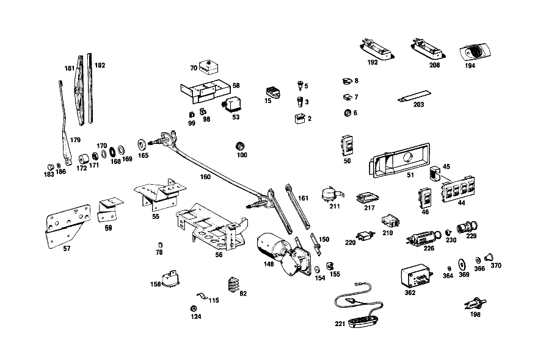

| № | Артикул | Название | Кол. | Примечание | Ограничение |
|---|---|---|---|---|---|
| 2 | A 008 545 37 28 | Сцепление, механическое | 9 | 2\-PIN [002] 015 FROM CHASSIS 002114 | |
| 3 | A 000 545 47 28 | Сцепление, механическое | 3 | [002] 015 FROM CHASSIS 002114 | |
| 5 | A 000 545 49 28 | ШТЕКЕР | - | ||
| 5 | A 004 545 84 28 | ШТЕКЕР | - | ||
| 5 | A 126 540 10 81 | Штекер | 1 | ОДНОКОНТАКТ. | |
| 7 | A 002 988 38 78 | Скоба | 8 | ||
| 8 | A 094 988 15 00 | Скоба | 15 | [052] 056 UP TO CHASSIS 008331; 057 UP TO CHASSIS 000693 | |
| 15 | A 000 546 70 41 | Кабельный соединитель | 1 | ||
| 17 | A 000 545 71 01 | БЛОК ПРЕДОХРАНИТЕЛЕЙ | - | ||
| 17 | A 000 545 99 01 | Закр. блок предохр. | 1 | ДЕРЖАТЕЛЬ РЕЛЕ [047] 016 FROM CHASSIS 002168; 018 FROM CHASSIS 002667 | |
| 23 | A 000 542 59 19 | Контактор | 1 | КЛИМАТИЧЕСКАЯ СИСТЕМА [048] 016 FROM CHASSIS 002168; 018 FROM CHASSIS 002667 | |
| 24 | A 000 542 58 19 | Контактор | 1 | ДОПОЛНИТЕЛЬНЫЙ ВЕНТИЛЯТОР [048] 016 FROM CHASSIS 002168; 018 FROM CHASSIS 002667 | |
| 37 | A 000 546 02 35 | КОЛПАЧОК | - | ||
| 37 | A 000 546 33 35 | Защитный колпачок | 1 | COVERING OF TEMPERATURE SWITCH CONNECTION [048] 016 FROM CHASSIS 002168; 018 FROM CHASSIS 002667 | |
| 38 | A 111 988 04 78 | СКОБА | - | ||
| 38 | A 002 988 48 78 | Скоба | 1 | CABLE CONNECTOR TO RADIATOR BAFFLE [048] 016 FROM CHASSIS 002168; 018 FROM CHASSIS 002667 | |
| 39 | A 000 545 94 11 | Переключатель | 1 | ДОПОЛНИТЕЛЬНЫЙ ВЕНТИЛЯТОР [048] 016 FROM CHASSIS 002168; 018 FROM CHASSIS 002667 | |
| 42 | A 003 545 24 24 | ВЫКЛЮЧАТЕЛЬ АВТОМ. | 1 | TEMPERATURE, IN THERMOSTAT COVER [048] 016 FROM CHASSIS 002168; 018 FROM CHASSIS 002667 | |
| 44 | A 001 821 33 51 | ВЫКЛЮЧАТЕЛЬ | 1 | 4\-СЕКЦ. [004] 015 FROM CHASSIS 002128 [021] 016 UP TO CHASSIS 001858 EXCEPT FOR, SEE FOOTNOTE 65; 018 UP TO CHASSIS 002019 EXCEPT FOR 001907,001911 [065] 057 UP TO CHASSIS 000668 EXCEPT FOR 000608,000613,000617,000647-000649,000664-000667 001473, 001548, 001702, 001722, 001786, 001793, 001797, 001801, 001804, 001853- 001857. | |
| 45 | A 109 821 00 36 | ПАНЕЛЬ | 3 | [021] 016 UP TO CHASSIS 001858 EXCEPT FOR, SEE FOOTNOTE 65; 018 UP TO CHASSIS 002019 EXCEPT FOR 001907,001911 [065] 057 UP TO CHASSIS 000668 EXCEPT FOR 000608,000613,000617,000647-000649,000664-000667 001473, 001548, 001702, 001722, 001786, 001793, 001797, 001801, 001804, 001853- 001857. | |
| 46 | A 001 821 30 51 | ВЫКЛЮЧАТЕЛЬ | 1 | SAFETY [004] 015 FROM CHASSIS 002128 [021] 016 UP TO CHASSIS 001858 EXCEPT FOR, SEE FOOTNOTE 65; 018 UP TO CHASSIS 002019 EXCEPT FOR 001907,001911 [065] 057 UP TO CHASSIS 000668 EXCEPT FOR 000608,000613,000617,000647-000649,000664-000667 001473, 001548, 001702, 001722, 001786, 001793, 001797, 001801, 001804, 001853- 001857. | |
| 50 | A 001 821 31 51 | ВЫКЛЮЧАТЕЛЬ | 3 | ПРОСТО [004] 015 FROM CHASSIS 002128 [021] 016 UP TO CHASSIS 001858 EXCEPT FOR, SEE FOOTNOTE 65; 018 UP TO CHASSIS 002019 EXCEPT FOR 001907,001911 [065] 057 UP TO CHASSIS 000668 EXCEPT FOR 000608,000613,000617,000647-000649,000664-000667 001473, 001548, 001702, 001722, 001786, 001793, 001797, 001801, 001804, 001853- 001857. | |
| 53 | A 000 542 58 19 | Контактор | 1 | LATERAL RIGHT WHEELHOUSE | |
| 58 | A 109 540 02 73 | ДЕРЖАТЕЛЬ | 1 | КОЛЕСН. АРКА СПРАВА | |
| 70 | A 000 545 67 01 | БЛОК ПРЕДОХРАНИТЕЛЕЙ | - | ||
| 70 | A 000 545 71 01 | БЛОК ПРЕДОХРАНИТЕЛЕЙ | - | ||
| 70 | A 000 545 99 01 | Закр. блок предохр. | 1 | ЧЕТЫРЁХПОЛЮСНЫЙ [021] 016 UP TO CHASSIS 001858 EXCEPT FOR, SEE FOOTNOTE 65; 018 UP TO CHASSIS 002019 EXCEPT FOR 001907,001911 [065] 057 UP TO CHASSIS 000668 EXCEPT FOR 000608,000613,000617,000647-000649,000664-000667 001473, 001548, 001702, 001722, 001786, 001793, 001797, 001801, 001804, 001853- 001857. | |
| 82 | A 000 546 35 41 | СОЕДИНИТЕЛЬ ПРОВОДОВ | - | [409] ПРИ МОНТАЖЕ ПОДОГНАТЬ ПО МЕСТУ | |
| 82 | A 001 546 58 41 | СОЕДИНИТЕЛЬ ПРОВОДОВ | 4 | 3\-КОНТАКТ. [402] БОЛЬШЕ НЕ ПОСТАВЛЯЕТСЯ [021] 016 UP TO CHASSIS 001858 EXCEPT FOR, SEE FOOTNOTE 65; 018 UP TO CHASSIS 002019 EXCEPT FOR 001907,001911 [065] 057 UP TO CHASSIS 000668 EXCEPT FOR 000608,000613,000617,000647-000649,000664-000667 001473, 001548, 001702, 001722, 001786, 001793, 001797, 001801, 001804, 001853- 001857. | |
| 91 | A 111 997 23 81 | КАБ. ВТУЛКА | - | ||
| 91 | A 008 997 17 81 | втулка | 1 | ||
| 98 | A 000 988 53 78 | СКОБА | 1 | [021] 016 UP TO CHASSIS 001858 EXCEPT FOR, SEE FOOTNOTE 65; 018 UP TO CHASSIS 002019 EXCEPT FOR 001907,001911 [065] 057 UP TO CHASSIS 000668 EXCEPT FOR 000608,000613,000617,000647-000649,000664-000667 001473, 001548, 001702, 001722, 001786, 001793, 001797, 001801, 001804, 001853- 001857. | |
| 99 | A 000 988 33 78 | Скоба | 1 | [021] 016 UP TO CHASSIS 001858 EXCEPT FOR, SEE FOOTNOTE 65; 018 UP TO CHASSIS 002019 EXCEPT FOR 001907,001911 [065] 057 UP TO CHASSIS 000668 EXCEPT FOR 000608,000613,000617,000647-000649,000664-000667 001473, 001548, 001702, 001722, 001786, 001793, 001797, 001801, 001804, 001853- 001857. | |
| 100 | A 100 997 08 81 | Проходная втулка | 2 | ||
| 101 | A 000 995 76 01 | хомут | 1 | ЖГУТ ЭЛ.ПРОВОДКИ НА ДВЕРИ ВОДИТЕЛЯ [021] 016 UP TO CHASSIS 001858 EXCEPT FOR, SEE FOOTNOTE 65; 018 UP TO CHASSIS 002019 EXCEPT FOR 001907,001911 [065] 057 UP TO CHASSIS 000668 EXCEPT FOR 000608,000613,000617,000647-000649,000664-000667 001473, 001548, 001702, 001722, 001786, 001793, 001797, 001801, 001804, 001853- 001857. | |
| 115 | A 000 995 76 01 | хомут | 2 | [008] 015 FROM CHASSIS 002025 | |
| 124 | A 000 997 27 81 | Проходная втулка | 2 | ||
| 141 | A 136 995 01 35 | хомут | 3 | [021] 016 UP TO CHASSIS 001858 EXCEPT FOR, SEE FOOTNOTE 65; 018 UP TO CHASSIS 002019 EXCEPT FOR 001907,001911 [065] 057 UP TO CHASSIS 000668 EXCEPT FOR 000608,000613,000617,000647-000649,000664-000667 001473, 001548, 001702, 001722, 001786, 001793, 001797, 001801, 001804, 001853- 001857. | |
| 148 | A 115 820 16 42 | ЭЛЕКТРОМОТОР | 1 | [022] 016 FROM CHASSIS 001859 ALSO INSTALLED ON, SEE FOOTNOTE 65; 018 FROM CHASSIS 002020 ALSO INSTALLED ON 001907,001911 [065] 057 UP TO CHASSIS 000668 EXCEPT FOR 000608,000613,000617,000647-000649,000664-000667 001473, 001548, 001702, 001722, 001786, 001793, 001797, 001801, 001804, 001853- 001857. [012] 015 FROM CHASSIS 002131 | |
| 150 | A 108 824 00 10 | - Кривошип | 1 | [021] 016 UP TO CHASSIS 001858 EXCEPT FOR, SEE FOOTNOTE 65; 018 UP TO CHASSIS 002019 EXCEPT FOR 001907,001911 [065] 057 UP TO CHASSIS 000668 EXCEPT FOR 000608,000613,000617,000647-000649,000664-000667 001473, 001548, 001702, 001722, 001786, 001793, 001797, 001801, 001804, 001853- 001857. | |
| 154 | A 000 987 38 41 | КОЛЬЦО РЕЗИНОВОЕ | 3 | ||
| 160 | A 108 820 00 43 | ТЯГИ | - | ||
| 160 | A 108 820 02 43 | Тяга | 1 | СТЕКЛООЧИСТИТЕЛЬ | |
| 161 | A 000 824 08 06 | - ТЯГА | 1 | [021] 016 UP TO CHASSIS 001858 EXCEPT FOR, SEE FOOTNOTE 65; 018 UP TO CHASSIS 002019 EXCEPT FOR 001907,001911 [065] 057 UP TO CHASSIS 000668 EXCEPT FOR 000608,000613,000617,000647-000649,000664-000667 001473, 001548, 001702, 001722, 001786, 001793, 001797, 001801, 001804, 001853- 001857. | |
| 165 | A 108 824 03 97 | Дистанционная шайба | 2 | ||
| 168 | A 000 987 07 41 | КОЛЬЦО РЕЗИНОВОЕ | 2 | ||
| 169 | A 001 990 11 40 | ШАЙБА | 2 | ||
| 170 | A 000 824 22 82 | Диск | 2 | ||
| 171 | A 002 990 26 51 | гайка | 2 | [013] 015 UP TO CHASSIS 002067 | |
| 172 | A 111 824 01 72 | ГАЙКА | - | ||
| 172 | A 110 824 04 72 | Капсула | 2 | [402] БОЛЬШЕ НЕ ПОСТАВЛЯЕТСЯ [014] 015 FROM CHASSIS 002068 | |
| 179 | A 108 820 06 44 | Поводок стеклоочистителя | 1 | СПРАВА [014] 015 FROM CHASSIS 002068 | |
| 181 | A 115 820 00 45 | ЩЕТКА СТЕКЛООЧИСТИТЕЛЯ | 2 | [014] 015 FROM CHASSIS 002068 | |
| 182 | A 000 824 07 27 | - Резин. элемент щетки | 2 | [014] 015 FROM CHASSIS 002068 | |
| 183 | A 000 990 12 53 | гайка | 2 | [014] 015 FROM CHASSIS 002068 [074] 018 UP TO CHASSIS 005647; 056 UP TO CHASSIS 005910 | |
| 186 | A 000 990 17 48 | Диск | 2 | ||
| 192 | A 108 820 03 52 | Лампа для чтения | 1 | [002] 015 FROM CHASSIS 002114 | |
| 194 | A 108 825 00 71 | ФОНАРЬ | 2 | ЛАМПА ДЛЯ ЧТЕНИЯ В ЗАДН.ЧАСТИ САЛОНА | |
| 198 | A 000 821 15 52 | Переключатель | 2 | ДВЕРЬ ВОДИТЕЛЯ | |
| 203 | A 112 540 04 73 | ДЕРЖАТЕЛЬ | - | ||
| 203 | A 112 540 11 73 | ДЕРЖАТЕЛЬ | 2 | DOOR CONTACT SWITCH CABLE HARNESS [036] 016 UP TO CHASSIS 002125; 018 UP TO CHASSIS 002557 | |
| 208 | A 108 820 04 52 | ЛАМПА ДЛЯ ЧТЕНИЯ | - | ||
| 208 | A 108 820 03 52 | Лампа для чтения | 1 | [002] 015 FROM CHASSIS 002114 | |
| 210 | A 001 821 02 51 | Переключатель | 1 | ||
| 211 | A 002 821 01 51 | Переключатель | 1 | ЗАМЕДЛЕНИЕ | |
| 217 | A 123 820 01 01 | ПЛАФОН ОСВЕЩЕНИЯ САЛОНА | - | ||
| 217 | A 126 820 13 01 | Плафон освещения салона | 1 | [018] 015 FROM CHASSIS 002204 | |
| 220 | A 000 821 08 52 | ВЫКЛЮЧАТЕЛЬ КОНТАКТНЫЙ | 1 | [402] БОЛЬШЕ НЕ ПОСТАВЛЯЕТСЯ [018] 015 FROM CHASSIS 002204 | |
| 221 | A 108 825 01 42 | ПЛАФОН ПОРОГА | 1 | ||
| 224 | A 110 825 00 41 | ПЛАФОН ОСВЕЩЕНИЯ САЛОНА | 1 | ||
| 230 | A 000 825 02 52 | - Прикуриватель | 1 | ||
| 234 | A 108 820 71 61 | БЛОК-ФАРА | 2 | с CONNECTION PLATE [050] 018 UP TO CHASSIS 005084; 056 UP TO CHASSIS 003923 | |
| 236 | A 111 826 03 89 | - ОБОДОК КРЫШКИ | 4 | ||
| 237 | A 108 826 03 89 | ОБОДОК КРЫШКИ | 2 | ||
| 238 | A 111 826 05 90 | РАССЕИВАТЕЛЬ | 2 | СЛЕВА | |
| 239 | A 111 826 06 90 | РАССЕИВАТЕЛЬ | 2 | СПРАВА | |
| 240 | A 000 826 08 84 | ПРУЖИНА | 4 | ||
| 241 | A 111 820 05 20 | УКАЗАТЕЛЬ ПОВОРОТА | 2 | с PARKING\-CLEARANCE LIGHTS [037] UP TO CHASSIS 002221 | |
| 243 | A 111 826 07 90 | РАССЕИВАТЕЛЬ | 2 | [037] UP TO CHASSIS 002221 | |
| 245 | A 111 820 00 96 | ПОДКЛАДКА | 2 | [037] UP TO CHASSIS 002221 | |
| 250 | A 108 820 00 20 | УКАЗАТЕЛЬ ПОВОРОТА | 2 | с PARKING\-CLEARANCE LIGHTS [038] FROM CHASSIS 002222 | |
| 252 | A 001 826 45 90 | - РАССЕИВАТЕЛЬ | 2 | [038] FROM CHASSIS 002222 | |
| 254 | A 000 826 66 80 | - УПЛОТНИТЕЛЬ | 2 | [038] FROM CHASSIS 002222 | |
| 256 | A 000 826 29 84 | - ПРУЖИНА | 8 | [038] FROM CHASSIS 002222 | |
| 265 | A 000 826 36 99 | ВСТАВКА ФАРЫ | - | ||
| 265 | A 000 826 55 99 | Вставка | 2 | HIGH/LOW BEAM; TYPE 2 [055] ЗАМЕНЯТЬ ТОЛЬКО ПАРАМИ | |
| 266 | A 000 826 01 99 | ВСТАВКА ФАРЫ | - | ||
| 266 | A 000 826 54 99 | Вставной модуль освещения | 2 | ДАЛЬНИЙ СВЕТ | |
| 267 | A 000 821 01 24 | РОЗЕТКА | 2 | ||
| 268 | A 111 826 00 12 | УГОЛ | 2 | ||
| 271 | A 000 826 07 41 | Боковой отражатель | 1 | СПЕРЕДИ СЛЕВА [045] 016 UP TO CHASSIS 002221; 018 UP TO CHASSIS 002838 | |
| 274 | A 000 826 05 41 | Боковой отражатель | 1 | СЗАДИ СЛЕВА [045] 016 UP TO CHASSIS 002221; 018 UP TO CHASSIS 002838 | |
| 276 | A 000 826 03 41 | Боковой отражатель | 1 | СПЕРЕДИ СЛЕВА [046] 016 FROM CHASSIS 002222; 018 FROM CHASSIS 002839 | |
| 278 | A 002 545 24 28 | - ШТЕКЕР | - | ||
| 278 | A 009 545 40 28 | - Сцепление, механическое | 2 | 2\-PIN [046] 016 FROM CHASSIS 002222; 018 FROM CHASSIS 002839 | |
| 279 | A 115 997 20 81 | - втулка | 2 | [046] 016 FROM CHASSIS 002222; 018 FROM CHASSIS 002839 | |
| 280 | A 000 826 01 41 | Боковой отражатель | 1 | СЗАДИ СЛЕВА [046] 016 FROM CHASSIS 002222; 018 FROM CHASSIS 002839 | |
| 287 | N 000934 004004 | Гайка | 8 | M4 | |
| 292 | A 108 820 03 62 | ФОНАРЬ ОСВЕЩ. НОМЕР.ЗНАКА | 1 | СЛЕВА | |
| 294 | A 186 826 01 66 | - РАССЕИВАТЕЛЬ | 2 | ||
| 295 | A 186 826 01 69 | - УПЛОТНИТЕЛЬ | 2 | ||
| 296 | A 186 820 00 84 | - ЗАМКОВЫЙ БЛОК | 2 | ||
| 297 | H 10 186 826 00 91 | - УПЛОТНИТ. КОЛЬЦО | 2 | [402] БОЛЬШЕ НЕ ПОСТАВЛЯЕТСЯ | |
| 298 | A 136 997 09 81 | - КАБ. ВТУЛКА | 1 | [402] БОЛЬШЕ НЕ ПОСТАВЛЯЕТСЯ | |
| 299 | A 108 826 00 97 | ПОДКЛАДКА | 2 | ||
| 300 | A 108 826 02 89 | ОБОДОК КРЫШКИ | 2 | ||
| 301 | A 001 988 52 78 | Скоба | 3 | ||
| 304 | A 002 545 86 28 | - ШТЕКЕР | 2 | ДВУХПОЛЮСНЫЙ | |
| 305 | A 120 990 00 63 | ПОЛЫЙ БОЛТ | 4 | LICENSE PLATE LAMPS TO REAR BODY PANEL | |
| 306 | N 912004 008102 | Пружинное кольцо | 4 | LICENSE PLATE LAMPS TO REAR BODY PANEL | |
| 307 | N 000433 008406 | Шайба | 4 | LICENSE PLATE LAMPS TO REAR BODY PANEL | |
| 308 | A 111 997 02 81 | втулка | 2 | 6MM/18MM | |
| 309 | A 110 987 00 44 | ДИСК | - | ||
| 309 | A 113 987 00 44 | Диск | 1 | 20.5 MM | |
| 314 | A 108 820 15 64 | Задний фонарь | 1 | СЛЕВА [044] 016 FROM CHASSIS 002373; 018 FROM CHASSIS 003080 [058] 018 UP TO CHASSIS 005328 EXCEPT FOR, SEE FOOTNOTE 60; 056 UP TO CHASSIS 004292 EXCEPT FOR, SEE FOOTNOTE 61 [060] 005253, 005267, 005274, 005309- 005312, 005314- 005327. [061] 004073, 004136, 004176, 004189, 004192- 004194, 004201, 004203, 004205, 004207- 004209, 004213- 004217, 004219- 004226, 004229- 004291. | |
| 317 | A 108 826 01 59 | - РАМА | 1 | СЛЕВА | |
| 322 | A 108 826 01 56 | - Рассеиватель фонаря | 1 | СЛЕВА [044] 016 FROM CHASSIS 002373; 018 FROM CHASSIS 003080 [077] 018 UP TO CHASSIS 005928; 056 UP TO CHASSIS 007414; 057 UP TO CHASSIS 000157 | |
| 323 | A 108 826 01 58 | - Уплотнительная рама | 1 | СЛЕВА | |
| 332 | A 111 990 00 57 | Гайковерт | 4 | ||
| 334 | A 000 544 53 32 | ДАТЧИК | 1 | [027] UP TO CHASSIS 002268 EXCEPT FOR, SEE FOOTNOTE 63 [063] 002217, 002218, 002220, 002222- 002231, 002233- 002236, 002238- 002245, 002247- 002250, 002253, 002254, 002256- 002267. | |
| 334 | A 000 544 61 32 | ДАТЧИК | 1 | [027] UP TO CHASSIS 002268 EXCEPT FOR, SEE FOOTNOTE 63 [063] 002217, 002218, 002220, 002222- 002231, 002233- 002236, 002238- 002245, 002247- 002250, 002253, 002254, 002256- 002267. | |
| 334 | A 000 544 58 32 | ДАТЧИК | 1 | BOSCH [027] UP TO CHASSIS 002268 EXCEPT FOR, SEE FOOTNOTE 63 [063] 002217, 002218, 002220, 002222- 002231, 002233- 002236, 002238- 002245, 002247- 002250, 002253, 002254, 002256- 002267. | |
| 362 | A 001 821 29 51 | ВЫКЛЮЧАТЕЛЬ | - | ||
| 364 | A 000 997 20 40 | УПЛОТНИТ. КОЛЬЦО | 1 | [027] UP TO CHASSIS 002268 EXCEPT FOR, SEE FOOTNOTE 63 [063] 002217, 002218, 002220, 002222- 002231, 002233- 002236, 002238- 002245, 002247- 002250, 002253, 002254, 002256- 002267. | |
| 382 | A 009 545 56 28 | Корпус штекера | 1 | [027] UP TO CHASSIS 002268 EXCEPT FOR, SEE FOOTNOTE 63 [063] 002217, 002218, 002220, 002222- 002231, 002233- 002236, 002238- 002245, 002247- 002250, 002253, 002254, 002256- 002267. | |
| 387 | A 006 545 80 28 | CONTACT SUPPORT | 1 | 6\-PIN [027] UP TO CHASSIS 002268 EXCEPT FOR, SEE FOOTNOTE 63 [063] 002217, 002218, 002220, 002222- 002231, 002233- 002236, 002238- 002245, 002247- 002250, 002253, 002254, 002256- 002267. | |
| 389 | A 108 826 00 14 | ДЕРЖАТЕЛЬ | 1 | [027] UP TO CHASSIS 002268 EXCEPT FOR, SEE FOOTNOTE 63 [063] 002217, 002218, 002220, 002222- 002231, 002233- 002236, 002238- 002245, 002247- 002250, 002253, 002254, 002256- 002267. | |
| A 000 821 06 25 | ШТЕКЕР | 1 | 2\-POLE, REAR DOOR CONTACT SWITCH CABLE HARNESS [402] БОЛЬШЕ НЕ ПОСТАВЛЯЕТСЯ [035] 016 FROM CHASSIS 002167; 018 FROM CHASSIS 002557 | ||
| A 001 988 77 78 | СКОБА | - | |||
| A 002 545 51 28 | ШТЕКЕР | - | |||
| A 004 545 86 28 | Штекер | - | |||
| A 007 545 00 28 | КОРПУС ШТЕК. ГНЕЗДА | - | |||
| A 015 545 49 28 | КОРПУС ШТЕК. ГНЕЗДА | NB | 4\-POLE, AIR CONDITIONER CABLE HARNESS, AUXILIARY BLOWER CABLE HARNESS; 4\-PIN | ||
| A 002 545 46 28 | ШТЕКЕР | - | |||
| A 005 545 13 28 | ШТЕКЕР | - | |||
| A 006 545 80 28 | CONTACT SUPPORT | NB | AIR CONDITIONER CABLE HARNESS, 4\-POLE; 6\-PIN | ||
| A 004 545 85 28 | ШТЕКЕР | - | |||
| A 008 545 20 28 | Нижняя часть корпуса | 2 | 1\-PIN | ||
| A 008 545 20 28 | Нижняя часть корпуса | NB | 1\-POLE, AUXILIARY BLOWER CABLE HARNESS; 1\-PIN | ||
| A 002 545 49 28 | ШТЕКЕР | - | |||
| A 008 545 37 28 | Сцепление, механическое | NB | 2\-POLE, AUXILIARY BLOWER CABLE HARNESS; 2\-PIN | ||
| N 007981 003326 | Шуруп | 2 | |||
| A 114 997 02 90 | связующее вещество | - | |||
| A 114 997 05 90 | связующее вещество | 4 | 9X210 MM | ||
| N 007981 003240 | Шуруп | - | |||
| N 007981 003207 | Шуруп | 2 | [047] 016 FROM CHASSIS 002168; 018 FROM CHASSIS 002667 | ||
| A 000 545 43 34 | ПРЕДОХРАНИТЕЛЬ | - | |||
| N 072581 016100 | Плавкая вставка | - | |||
| A 000 545 83 34 | предохранитель | 1 | [047] 016 FROM CHASSIS 002168; 018 FROM CHASSIS 002667 | ||
| A 000 545 62 01 | БЛОК ПРЕДОХРАНИТЕЛЕЙ | - | |||
| A 000 545 99 01 | Закр. блок предохр. | 1 | ДОПОЛНИТЕЛЬНЫЙ ВЕНТИЛЯТОР [048] 016 FROM CHASSIS 002168; 018 FROM CHASSIS 002667 | ||
| A 000 545 43 34 | ПРЕДОХРАНИТЕЛЬ | - | |||
| N 072581 016100 | Плавкая вставка | - | |||
| A 000 545 83 34 | предохранитель | 1 | [048] 016 FROM CHASSIS 002168; 018 FROM CHASSIS 002667 | ||
| N 007985 004129 | Винт | 2 | РЕЛЕ НА ДЕРЖАТ. [048] 016 FROM CHASSIS 002168; 018 FROM CHASSIS 002667 | ||
| N 000127 004203 | Пружинное кольцо | - | |||
| N 912004 004102 | Пружинное кольцо | 2 | РЕЛЕ НА ДЕРЖАТ. [048] 016 FROM CHASSIS 002168; 018 FROM CHASSIS 002667 | ||
| N 000934 004004 | Гайка | 2 | РЕЛЕ НА ДЕРЖАТ.; M4 [048] 016 FROM CHASSIS 002168; 018 FROM CHASSIS 002667 | ||
| A 001 997 41 90 | Кабельная стяжка | 6 | 100 MM; 7X100 MM | ||
| N 000933 006103 | Винт | - | |||
| N 304017 006018 | Винт с 6-гранной головкой | 1 | РЕЛЕ НА ДЕРЖАТ.; M6X12 [048] 016 FROM CHASSIS 002168; 018 FROM CHASSIS 002667 | ||
| A 094 990 68 10 | Пружинное кольцо | 1 | РЕЛЕ НА ДЕРЖАТ. [048] 016 FROM CHASSIS 002168; 018 FROM CHASSIS 002667 | ||
| A 000 990 27 91 | ГАЙКОДЕРЖАТЕЛЬ | - | |||
| A 000 990 22 91 | ГАЙКОДЕРЖАТЕЛЬ | 1 | BRACKET TO RELAY SWITCH [402] БОЛЬШЕ НЕ ПОСТАВЛЯЕТСЯ [048] 016 FROM CHASSIS 002168; 018 FROM CHASSIS 002667 | ||
| N 000934 006007 | Гайка | 1 | РЕЛЕ НА ДЕРЖАТ. [048] 016 FROM CHASSIS 002168; 018 FROM CHASSIS 002667 | ||
| N 007981 004254 | Шуруп | 2 | ADDITIONAL BLOWER RELAY TO BRACKET; 4.2X19 [048] 016 FROM CHASSIS 002168; 018 FROM CHASSIS 002667 | ||
| N 000137 010205 | Пружинная шайба | 1 | ВЫКЛЮЧАТЕЛЬ К КРОНШТЕЙНУ [048] 016 FROM CHASSIS 002168; 018 FROM CHASSIS 002667 | ||
| N 000936 010003 | ГАЙКА | 1 | ВЫКЛЮЧАТЕЛЬ К КРОНШТЕЙНУ [048] 016 FROM CHASSIS 002168; 018 FROM CHASSIS 002667 | ||
| A 003 545 01 24 | ВЫКЛЮЧАТЕЛЬ АВТОМ. | - | [049] 016 UP TO CHASSIS 002221; 018 UP TO CHASSIS 002838 | ||
| A 000 983 29 91 | ПАПКА | 3 | TAIL LAMP CABLE HARNESS TO TRUNK FLOOR 3 X 120 X 80 MM 3X120X80 MM | ||
| A 001 821 49 51 | Переключатель | 1 | DOUBLE, с SAFETY SWITCH [022] 016 FROM CHASSIS 001859 ALSO INSTALLED ON, SEE FOOTNOTE 65; 018 FROM CHASSIS 002020 ALSO INSTALLED ON 001907,001911 [065] 057 UP TO CHASSIS 000668 EXCEPT FOR 000608,000613,000617,000647-000649,000664-000667 001473, 001548, 001702, 001722, 001786, 001793, 001797, 001801, 001804, 001853- 001857. | ||
| A 001 821 50 51 | Переключатель | 1 | DOUBLE, LESS SAFETY SWITCH [022] 016 FROM CHASSIS 001859 ALSO INSTALLED ON, SEE FOOTNOTE 65; 018 FROM CHASSIS 002020 ALSO INSTALLED ON 001907,001911 [065] 057 UP TO CHASSIS 000668 EXCEPT FOR 000608,000613,000617,000647-000649,000664-000667 001473, 001548, 001702, 001722, 001786, 001793, 001797, 001801, 001804, 001853- 001857. | ||
| A 001 821 51 51 | Переключатель | 2 | ПРОСТО [022] 016 FROM CHASSIS 001859 ALSO INSTALLED ON, SEE FOOTNOTE 65; 018 FROM CHASSIS 002020 ALSO INSTALLED ON 001907,001911 [065] 057 UP TO CHASSIS 000668 EXCEPT FOR 000608,000613,000617,000647-000649,000664-000667 001473, 001548, 001702, 001722, 001786, 001793, 001797, 001801, 001804, 001853- 001857. | ||
| A 109 821 04 65 | КОРПУС | 2 | ДВЕРЬ ВОДИТЕЛЯ [004] 015 FROM CHASSIS 002128 [022] 016 FROM CHASSIS 001859 ALSO INSTALLED ON, SEE FOOTNOTE 65; 018 FROM CHASSIS 002020 ALSO INSTALLED ON 001907,001911 [065] 057 UP TO CHASSIS 000668 EXCEPT FOR 000608,000613,000617,000647-000649,000664-000667 001473, 001548, 001702, 001722, 001786, 001793, 001797, 001801, 001804, 001853- 001857. | ||
| A 109 821 06 65 | КОРПУС | - | |||
| A 123 821 02 65 | Корпус | 2 | ЗАДНЯЯ ДВЕРЬ | ||
| A 000 542 59 19 | Контактор | 1 | FRONT RIGHT WHEELHOUSE | ||
| N 007981 004326 | Шуруп | 4 | |||
| A 000 545 71 01 | БЛОК ПРЕДОХРАНИТЕЛЕЙ | - | |||
| A 000 545 99 01 | Закр. блок предохр. | 1 | ДВУХПОЛЮСНЫЙ [022] 016 FROM CHASSIS 001859 ALSO INSTALLED ON, SEE FOOTNOTE 65; 018 FROM CHASSIS 002020 ALSO INSTALLED ON 001907,001911 [065] 057 UP TO CHASSIS 000668 EXCEPT FOR 000608,000613,000617,000647-000649,000664-000667 001473, 001548, 001702, 001722, 001786, 001793, 001797, 001801, 001804, 001853- 001857. | ||
| N 007981 004331 | Шуруп | 2 | |||
| N 007985 004125 | Винт | - | |||
| N 007985 004107 | Винт | 2 | M4X10 [005] 015 UP TO CHASSIS 002369; 016 UP TO CHASSIS 000046 | ||
| N 000127 004203 | Пружинное кольцо | - | |||
| N 912004 004102 | Пружинное кольцо | 2 | [005] 015 UP TO CHASSIS 002369; 016 UP TO CHASSIS 000046 | ||
| N 000934 004004 | Гайка | 2 | M4 [005] 015 UP TO CHASSIS 002369; 016 UP TO CHASSIS 000046 | ||
| N 007981 004326 | Шуруп | 2 | [006] 016 FROM CHASSIS 000047 | ||
| A 000 994 13 45 | предохранитель | 2 | [006] 016 FROM CHASSIS 000047 | ||
| N 072581 025100 | ПРЕДОХРАНИТЕЛЬ | 4 | [021] 016 UP TO CHASSIS 001858 EXCEPT FOR, SEE FOOTNOTE 65; 018 UP TO CHASSIS 002019 EXCEPT FOR 001907,001911 [065] 057 UP TO CHASSIS 000668 EXCEPT FOR 000608,000613,000617,000647-000649,000664-000667 001473, 001548, 001702, 001722, 001786, 001793, 001797, 001801, 001804, 001853- 001857. | ||
| A 000 545 43 34 | ПРЕДОХРАНИТЕЛЬ | - | |||
| N 072581 016100 | Плавкая вставка | - | |||
| A 000 545 83 34 | предохранитель | 4 | [022] 016 FROM CHASSIS 001859 ALSO INSTALLED ON, SEE FOOTNOTE 65; 018 FROM CHASSIS 002020 ALSO INSTALLED ON 001907,001911 [065] 057 UP TO CHASSIS 000668 EXCEPT FOR 000608,000613,000617,000647-000649,000664-000667 001473, 001548, 001702, 001722, 001786, 001793, 001797, 001801, 001804, 001853- 001857. | ||
| A 000 546 70 41 | Кабельный соединитель | 4 | ДВУХПОЛЮСНЫЙ [022] 016 FROM CHASSIS 001859 ALSO INSTALLED ON, SEE FOOTNOTE 65; 018 FROM CHASSIS 002020 ALSO INSTALLED ON 001907,001911 [065] 057 UP TO CHASSIS 000668 EXCEPT FOR 000608,000613,000617,000647-000649,000664-000667 001473, 001548, 001702, 001722, 001786, 001793, 001797, 001801, 001804, 001853- 001857. | ||
| N 007516 004107 | Саморез | 4 | ДВЕРЬ ВОДИТЕЛЯ | ||
| A 000 990 72 97 | ЗАКЛЕПКА | 4 | ЗАДНЯЯ ДВЕРЬ [008] 015 FROM CHASSIS 002025 [054] НЕ ИСПОЛЬЗУЕТСЯ | ||
| A 002 545 45 28 | ШТЕКЕР | - | |||
| A 005 545 13 28 | ШТЕКЕР | - | |||
| A 006 545 80 28 | CONTACT SUPPORT | 1 | ПЯТИПОЛЮСНЫЙ; 6\-PIN | ||
| A 002 545 52 28 | ШТЕКЕР | - | |||
| A 004 545 86 28 | Штекер | - | |||
| A 007 545 00 28 | КОРПУС ШТЕК. ГНЕЗДА | - | |||
| A 015 545 49 28 | КОРПУС ШТЕК. ГНЕЗДА | 1 | 3\-КОНТАКТ.; 4\-PIN | ||
| A 004 545 62 28 | КОРПУС ШТЕК. ГНЕЗДА | - | Рулевое управление: ВлевоКоробка передач | ||
| A 009 545 83 28 | Корпус штекерной втулки | - | 2\-PIN Рулевое управление: ВлевоКоробка передач | ||
| A 004 545 63 28 | ШТЕКЕР | - | |||
| A 004 545 65 28 | ШТЕКЕР | - | |||
| A 009 545 94 28 | Корпус штекерной втулки | 3 | 3\-КОНТАКТ. [022] 016 FROM CHASSIS 001859 ALSO INSTALLED ON, SEE FOOTNOTE 65; 018 FROM CHASSIS 002020 ALSO INSTALLED ON 001907,001911 [065] 057 UP TO CHASSIS 000668 EXCEPT FOR 000608,000613,000617,000647-000649,000664-000667 001473, 001548, 001702, 001722, 001786, 001793, 001797, 001801, 001804, 001853- 001857. | ||
| A 004 545 64 28 | ШТЕКЕР | - | |||
| A 004 545 65 28 | ШТЕКЕР | - | |||
| A 009 545 94 28 | Корпус штекерной втулки | 1 | ЧЕТЫРЁХПОЛЮСНЫЙ [022] 016 FROM CHASSIS 001859 ALSO INSTALLED ON, SEE FOOTNOTE 65; 018 FROM CHASSIS 002020 ALSO INSTALLED ON 001907,001911 [065] 057 UP TO CHASSIS 000668 EXCEPT FOR 000608,000613,000617,000647-000649,000664-000667 001473, 001548, 001702, 001722, 001786, 001793, 001797, 001801, 001804, 001853- 001857. | ||
| A 002 545 49 28 | ШТЕКЕР | - | |||
| A 008 545 37 28 | Сцепление, механическое | 1 | ДВУХПОЛЮСНЫЙ; 2\-PIN [022] 016 FROM CHASSIS 001859 ALSO INSTALLED ON, SEE FOOTNOTE 65; 018 FROM CHASSIS 002020 ALSO INSTALLED ON 001907,001911 [065] 057 UP TO CHASSIS 000668 EXCEPT FOR 000608,000613,000617,000647-000649,000664-000667 001473, 001548, 001702, 001722, 001786, 001793, 001797, 001801, 001804, 001853- 001857. | ||
| A 002 545 24 28 | ШТЕКЕР | - | |||
| A 009 545 40 28 | Сцепление, механическое | 1 | ДВУХПОЛЮСНЫЙ; 2\-PIN [022] 016 FROM CHASSIS 001859 ALSO INSTALLED ON, SEE FOOTNOTE 65; 018 FROM CHASSIS 002020 ALSO INSTALLED ON 001907,001911 [065] 057 UP TO CHASSIS 000668 EXCEPT FOR 000608,000613,000617,000647-000649,000664-000667 001473, 001548, 001702, 001722, 001786, 001793, 001797, 001801, 001804, 001853- 001857. | ||
| A 000 821 06 25 | ШТЕКЕР | 1 | ДВУХПОЛЮСНЫЙ [402] БОЛЬШЕ НЕ ПОСТАВЛЯЕТСЯ [022] 016 FROM CHASSIS 001859 ALSO INSTALLED ON, SEE FOOTNOTE 65; 018 FROM CHASSIS 002020 ALSO INSTALLED ON 001907,001911 [065] 057 UP TO CHASSIS 000668 EXCEPT FOR 000608,000613,000617,000647-000649,000664-000667 001473, 001548, 001702, 001722, 001786, 001793, 001797, 001801, 001804, 001853- 001857. | ||
| N 007976 004215 | Шуруп | 2 | 4.8X16 [021] 016 UP TO CHASSIS 001858 EXCEPT FOR, SEE FOOTNOTE 65; 018 UP TO CHASSIS 002019 EXCEPT FOR 001907,001911 [065] 057 UP TO CHASSIS 000668 EXCEPT FOR 000608,000613,000617,000647-000649,000664-000667 001473, 001548, 001702, 001722, 001786, 001793, 001797, 001801, 001804, 001853- 001857. | ||
| A 000 995 77 01 | ХОМУТ | - | |||
| A 001 995 13 01 | Крепежный хомут | 1 | ЖГУТ ЭЛ.ПРОВОДКИ НА ДВЕРИ ВОДИТЕЛЯ [021] 016 UP TO CHASSIS 001858 EXCEPT FOR, SEE FOOTNOTE 65; 018 UP TO CHASSIS 002019 EXCEPT FOR 001907,001911 [065] 057 UP TO CHASSIS 000668 EXCEPT FOR 000608,000613,000617,000647-000649,000664-000667 001473, 001548, 001702, 001722, 001786, 001793, 001797, 001801, 001804, 001853- 001857. | ||
| N 000933 004067 | Винт | 2 | ЖГУТ ЭЛ.ПРОВОДКИ НА ДВЕРИ ВОДИТЕЛЯ [021] 016 UP TO CHASSIS 001858 EXCEPT FOR, SEE FOOTNOTE 65; 018 UP TO CHASSIS 002019 EXCEPT FOR 001907,001911 [065] 057 UP TO CHASSIS 000668 EXCEPT FOR 000608,000613,000617,000647-000649,000664-000667 001473, 001548, 001702, 001722, 001786, 001793, 001797, 001801, 001804, 001853- 001857. | ||
| N 000127 004203 | Пружинное кольцо | - | |||
| N 912004 004102 | Пружинное кольцо | 2 | ЖГУТ ЭЛ.ПРОВОДКИ НА ДВЕРИ ВОДИТЕЛЯ [021] 016 UP TO CHASSIS 001858 EXCEPT FOR, SEE FOOTNOTE 65; 018 UP TO CHASSIS 002019 EXCEPT FOR 001907,001911 [065] 057 UP TO CHASSIS 000668 EXCEPT FOR 000608,000613,000617,000647-000649,000664-000667 001473, 001548, 001702, 001722, 001786, 001793, 001797, 001801, 001804, 001853- 001857. | ||
| N 000934 004004 | Гайка | 2 | ЖГУТ ЭЛ.ПРОВОДКИ НА ДВЕРИ ВОДИТЕЛЯ; M4 [021] 016 UP TO CHASSIS 001858 EXCEPT FOR, SEE FOOTNOTE 65; 018 UP TO CHASSIS 002019 EXCEPT FOR 001907,001911 [065] 057 UP TO CHASSIS 000668 EXCEPT FOR 000608,000613,000617,000647-000649,000664-000667 001473, 001548, 001702, 001722, 001786, 001793, 001797, 001801, 001804, 001853- 001857. | ||
| A 136 995 01 37 | хомут | 2 | [021] 016 UP TO CHASSIS 001858 EXCEPT FOR, SEE FOOTNOTE 65; 018 UP TO CHASSIS 002019 EXCEPT FOR 001907,001911 [065] 057 UP TO CHASSIS 000668 EXCEPT FOR 000608,000613,000617,000647-000649,000664-000667 001473, 001548, 001702, 001722, 001786, 001793, 001797, 001801, 001804, 001853- 001857. | ||
| N 009021 004108 | Шайба | - | |||
| A 094 990 63 08 | Шайба | 2 | [021] 016 UP TO CHASSIS 001858 EXCEPT FOR, SEE FOOTNOTE 65; 018 UP TO CHASSIS 002019 EXCEPT FOR 001907,001911 [065] 057 UP TO CHASSIS 000668 EXCEPT FOR 000608,000613,000617,000647-000649,000664-000667 001473, 001548, 001702, 001722, 001786, 001793, 001797, 001801, 001804, 001853- 001857. | ||
| N 007981 004322 | Шуруп | 2 | [022] 016 FROM CHASSIS 001859 ALSO INSTALLED ON, SEE FOOTNOTE 65; 018 FROM CHASSIS 002020 ALSO INSTALLED ON 001907,001911 [065] 057 UP TO CHASSIS 000668 EXCEPT FOR 000608,000613,000617,000647-000649,000664-000667 001473, 001548, 001702, 001722, 001786, 001793, 001797, 001801, 001804, 001853- 001857. [072] 018 UP TO CHASSIS 005952; 056 UP TO CHASSIS 007558; 057 UP TO CHASSIS 000206 | ||
| N 000126 005801 | ШАЙБА | 2 | [022] 016 FROM CHASSIS 001859 ALSO INSTALLED ON, SEE FOOTNOTE 65; 018 FROM CHASSIS 002020 ALSO INSTALLED ON 001907,001911 [065] 057 UP TO CHASSIS 000668 EXCEPT FOR 000608,000613,000617,000647-000649,000664-000667 001473, 001548, 001702, 001722, 001786, 001793, 001797, 001801, 001804, 001853- 001857. [072] 018 UP TO CHASSIS 005952; 056 UP TO CHASSIS 007558; 057 UP TO CHASSIS 000206 | ||
| N 007985 004125 | Винт | - | |||
| N 007985 004107 | Винт | 2 | ЖГУТ ЭЛ.ПРОВОДКИ НА ДВЕРИ ВОДИТЕЛЯ; M4X10 [073] 018 FROM CHASSIS 005953; 056 FROM CHASSIS 007559; 057 FROM CHASSIS 000207 | ||
| N 000127 004203 | Пружинное кольцо | - | |||
| N 912004 004102 | Пружинное кольцо | 2 | ЖГУТ ЭЛ.ПРОВОДКИ НА ДВЕРИ ВОДИТЕЛЯ [073] 018 FROM CHASSIS 005953; 056 FROM CHASSIS 007559; 057 FROM CHASSIS 000207 | ||
| N 009021 004202 | Шайба | - | |||
| A 094 990 63 08 | Шайба | 2 | ЖГУТ ЭЛ.ПРОВОДКИ НА ДВЕРИ ВОДИТЕЛЯ [073] 018 FROM CHASSIS 005953; 056 FROM CHASSIS 007559; 057 FROM CHASSIS 000207 | ||
| N 000934 004004 | Гайка | 2 | ЖГУТ ЭЛ.ПРОВОДКИ НА ДВЕРИ ВОДИТЕЛЯ; M4 [073] 018 FROM CHASSIS 005953; 056 FROM CHASSIS 007559; 057 FROM CHASSIS 000207 | ||
| N 000085 004127 | Винт | 8 | |||
| N 000127 004203 | Пружинное кольцо | - | |||
| N 912004 004102 | Пружинное кольцо | 8 | |||
| A 000 995 75 01 | ХОМУТ | - | |||
| N 007985 004107 | Винт | 2 | M4X10 [008] 015 FROM CHASSIS 002025 | ||
| N 000934 004004 | Гайка | 2 | M4 [008] 015 FROM CHASSIS 002025 | ||
| N 912004 004102 | Пружинное кольцо | 2 | [008] 015 FROM CHASSIS 002025 | ||
| A 002 988 02 78 | Скоба | 10 | [008] 015 FROM CHASSIS 002025 | ||
| A 000 988 18 78 | Скоба | 4 | [008] 015 FROM CHASSIS 002025 | ||
| A 000 997 28 81 | Проходная втулка | 2 | [008] 015 FROM CHASSIS 002025 | ||
| A 000 988 53 78 | СКОБА | - | |||
| A 114 997 04 90 | связующее вещество | - | |||
| A 114 997 02 90 | связующее вещество | - | |||
| A 114 997 05 90 | связующее вещество | 2 | FRONT PANEL PILLAR INTERIOR PLATE; 9X210 MM [010] 015 FROM CHASSIS 000247 ALSO INSTALLED ON 000194,000222,000225,000238,00240-000245 | ||
| A 114 997 05 90 | - связующее вещество | 1 | FUSE BOX RELAY BRACKET; 9X210 MM [022] 016 FROM CHASSIS 001859 ALSO INSTALLED ON, SEE FOOTNOTE 65; 018 FROM CHASSIS 002020 ALSO INSTALLED ON 001907,001911 [065] 057 UP TO CHASSIS 000668 EXCEPT FOR 000608,000613,000617,000647-000649,000664-000667 001473, 001548, 001702, 001722, 001786, 001793, 001797, 001801, 001804, 001853- 001857. | ||
| A 114 997 05 90 | - связующее вещество | 1 | FRONT PANEL PILLAR, INSIDE; 9X210 MM [022] 016 FROM CHASSIS 001859 ALSO INSTALLED ON, SEE FOOTNOTE 65; 018 FROM CHASSIS 002020 ALSO INSTALLED ON 001907,001911 [065] 057 UP TO CHASSIS 000668 EXCEPT FOR 000608,000613,000617,000647-000649,000664-000667 001473, 001548, 001702, 001722, 001786, 001793, 001797, 001801, 001804, 001853- 001857. | ||
| A 114 997 05 90 | - связующее вещество | 1 | МОТОРНЫЙ ЩИТ; 9X210 MM [022] 016 FROM CHASSIS 001859 ALSO INSTALLED ON, SEE FOOTNOTE 65; 018 FROM CHASSIS 002020 ALSO INSTALLED ON 001907,001911 [065] 057 UP TO CHASSIS 000668 EXCEPT FOR 000608,000613,000617,000647-000649,000664-000667 001473, 001548, 001702, 001722, 001786, 001793, 001797, 001801, 001804, 001853- 001857. | ||
| A 114 997 05 90 | - связующее вещество | 3 | DOOR CONTACT TO FRONT PANEL PILLAR, INSIDE; 9X210 MM [034] 018 UP TO CHASSIS 005202; 056 UP TO CHASSIS 003594 | ||
| A 114 997 01 90 | Кабельная стяжка | 1 | 80mm; 80mm [022] 016 FROM CHASSIS 001859 ALSO INSTALLED ON, SEE FOOTNOTE 65; 018 FROM CHASSIS 002020 ALSO INSTALLED ON 001907,001911 [065] 057 UP TO CHASSIS 000668 EXCEPT FOR 000608,000613,000617,000647-000649,000664-000667 001473, 001548, 001702, 001722, 001786, 001793, 001797, 001801, 001804, 001853- 001857. | ||
| A 001 997 12 90 | СОЕДИНИТЕЛЬНЫЙ ЭЛЕМЕНТ | - | |||
| A 001 997 42 90 | связующее вещество | - | |||
| A 001 997 43 90 | Кабельная стяжка | 1 | FRONT PANEL PILLAR INTERIOR PLATE 140mm; 9X250 MM [010] 015 FROM CHASSIS 000247 ALSO INSTALLED ON 000194,000222,000225,000238,00240-000245 | ||
| N 040621 018200 | Изоляционный шланг | 0 | [404] ЗАКАЗЫВАТЬ ПОГОННЫМИ МЕТРАМИ [069] ЗАКАЗЫВАТЬ ПОГОННЫМИ МЕТРАМИ | ||
| N 040621 018200 | - Изоляционный шланг | 2 | [404] ЗАКАЗЫВАТЬ ПОГОННЫМИ МЕТРАМИ [021] 016 UP TO CHASSIS 001858 EXCEPT FOR, SEE FOOTNOTE 65; 018 UP TO CHASSIS 002019 EXCEPT FOR 001907,001911 [065] 057 UP TO CHASSIS 000668 EXCEPT FOR 000608,000613,000617,000647-000649,000664-000667 001473, 001548, 001702, 001722, 001786, 001793, 001797, 001801, 001804, 001853- 001857. | ||
| N 040621 014200 | Изоляционный шланг | 2 | ДВЕРЬ ВОДИТЕЛЯ B14X1X200 MM [404] ЗАКАЗЫВАТЬ ПОГОННЫМИ МЕТРАМИ [022] 016 FROM CHASSIS 001859 ALSO INSTALLED ON, SEE FOOTNOTE 65; 018 FROM CHASSIS 002020 ALSO INSTALLED ON 001907,001911 [065] 057 UP TO CHASSIS 000668 EXCEPT FOR 000608,000613,000617,000647-000649,000664-000667 001473, 001548, 001702, 001722, 001786, 001793, 001797, 001801, 001804, 001853- 001857. [069] ЗАКАЗЫВАТЬ ПОГОННЫМИ МЕТРАМИ | ||
| N 040621 008200 | Изоляционный шланг | 2 | ЗАДНЯЯ ДВЕРЬ B8X07X230 MM [404] ЗАКАЗЫВАТЬ ПОГОННЫМИ МЕТРАМИ [022] 016 FROM CHASSIS 001859 ALSO INSTALLED ON, SEE FOOTNOTE 65; 018 FROM CHASSIS 002020 ALSO INSTALLED ON 001907,001911 [065] 057 UP TO CHASSIS 000668 EXCEPT FOR 000608,000613,000617,000647-000649,000664-000667 001473, 001548, 001702, 001722, 001786, 001793, 001797, 001801, 001804, 001853- 001857. [069] ЗАКАЗЫВАТЬ ПОГОННЫМИ МЕТРАМИ | ||
| A 000 980 14 00 | Изоляционный шланг | 2 | ЗАДНЯЯ ДВЕРЬ B10X07X230 MM [404] ЗАКАЗЫВАТЬ ПОГОННЫМИ МЕТРАМИ [021] 016 UP TO CHASSIS 001858 EXCEPT FOR, SEE FOOTNOTE 65; 018 UP TO CHASSIS 002019 EXCEPT FOR 001907,001911 [065] 057 UP TO CHASSIS 000668 EXCEPT FOR 000608,000613,000617,000647-000649,000664-000667 001473, 001548, 001702, 001722, 001786, 001793, 001797, 001801, 001804, 001853- 001857. [008] 015 FROM CHASSIS 002025 [069] ЗАКАЗЫВАТЬ ПОГОННЫМИ МЕТРАМИ | ||
| A 187 995 00 37 | хомут | 1 | [021] 016 UP TO CHASSIS 001858 EXCEPT FOR, SEE FOOTNOTE 65; 018 UP TO CHASSIS 002019 EXCEPT FOR 001907,001911 [065] 057 UP TO CHASSIS 000668 EXCEPT FOR 000608,000613,000617,000647-000649,000664-000667 001473, 001548, 001702, 001722, 001786, 001793, 001797, 001801, 001804, 001853- 001857. | ||
| N 007976 004215 | Шуруп | 4 | 4.8X16 [021] 016 UP TO CHASSIS 001858 EXCEPT FOR, SEE FOOTNOTE 65; 018 UP TO CHASSIS 002019 EXCEPT FOR 001907,001911 [065] 057 UP TO CHASSIS 000668 EXCEPT FOR 000608,000613,000617,000647-000649,000664-000667 001473, 001548, 001702, 001722, 001786, 001793, 001797, 001801, 001804, 001853- 001857. | ||
| A 108 820 03 42 | ЭЛЕКТРОМОТОР | - | |||
| A 115 820 01 42 | ЭЛЕКТРОМОТОР | - | |||
| A 108 820 04 42 | Электродвигатель | 1 | |||
| A 000 824 22 75 | - УГОЛНЫЕ ЩЕТКИ К-Т | 1 | 3 PIECES | ||
| A 108 824 01 10 | - КРИВОШИП | 1 | [022] 016 FROM CHASSIS 001859 ALSO INSTALLED ON, SEE FOOTNOTE 65; 018 FROM CHASSIS 002020 ALSO INSTALLED ON 001907,001911 [065] 057 UP TO CHASSIS 000668 EXCEPT FOR 000608,000613,000617,000647-000649,000664-000667 001473, 001548, 001702, 001722, 001786, 001793, 001797, 001801, 001804, 001853- 001857. | ||
| N 000934 006013 | Гайка | - | |||
| N 304032 006008 | Шестигранная гайка | 3 | [012] 015 FROM CHASSIS 002131 | ||
| N 006797 006145 | Зубчатая шайба | 3 | [012] 015 FROM CHASSIS 002131 | ||
| A 000 824 11 06 | - Шарнирная тяга | 1 | [022] 016 FROM CHASSIS 001859 ALSO INSTALLED ON, SEE FOOTNOTE 65; 018 FROM CHASSIS 002020 ALSO INSTALLED ON 001907,001911 [065] 057 UP TO CHASSIS 000668 EXCEPT FOR 000608,000613,000617,000647-000649,000664-000667 001473, 001548, 001702, 001722, 001786, 001793, 001797, 001801, 001804, 001853- 001857. | ||
| N 000933 006103 | Винт | - | |||
| N 304017 006018 | Винт с 6-гранной головкой | 1 | M6X12 | ||
| A 094 990 68 10 | Пружинное кольцо | 1 | |||
| N 009021 006103 | Шайба | - | |||
| N 009021 006208 | Шайба | 1 | 6 MM | ||
| N 900161 006101 | БОЛТ | 4 | |||
| A 094 990 68 10 | Пружинное кольцо | 4 | |||
| N 009021 006103 | Шайба | - | |||
| N 009021 006208 | Шайба | 4 | 6 MM | ||
| A 000 824 14 72 | гайка | - | |||
| A 108 820 03 44 | РЫЧАГ СТЕКЛООЧИСТИТЕЛЯ | - | |||
| A 108 820 05 44 | Поводок стеклоочистителя | 1 | СЛЕВА [014] 015 FROM CHASSIS 002068 | ||
| A 108 820 04 44 | РЫЧАГ СТЕКЛООЧИСТИТЕЛЯ | - | |||
| A 108 820 01 45 | ЩЕТКА СТЕКЛООЧИСТИТЕЛЯ | - | |||
| A 000 824 25 72 | ГАЙКА | - | |||
| N 000936 008006 | ГАЙКА | 2 | [075] 018 FROM CHASSIS 005648; 056 FROM CHASSIS 005911 | ||
| N 072601 012120 | Лампа накаливания | 1 | 12V\-10W [002] 015 FROM CHASSIS 002114 | ||
| N 007981 003254 | САМОРЕЗ | 1 | [002] 015 FROM CHASSIS 002114 | ||
| N 007982 003215 | Шуруп | 4 | READING LAMP TO REAR END PILLAR | ||
| N 072601 012701 | Лампа накаливания | 2 | 12V\-5W | ||
| A 001 988 77 78 | СКОБА | - | |||
| A 000 988 17 78 | СКОБА | 3 | ADDITIONAL CABLE HARNESS TO ROOF RAIL | ||
| A 000 821 04 52 | ВЫКЛЮЧАТЕЛЬ КОНТАКТНЫЙ | - | |||
| A 000 821 02 52 | ВЫКЛЮЧАТЕЛЬ КОНТАКТНЫЙ | - | |||
| A 110 821 00 96 | ПОДКЛАДКА | - | |||
| A 000 821 06 52 | ВЫКЛЮЧАТЕЛЬ КОНТАКТНЫЙ | 2 | ЗАДНЯЯ ДВЕРЬ | ||
| H 10 120 825 00 96 | ПОДКЛАДКА | NB | [402] БОЛЬШЕ НЕ ПОСТАВЛЯЕТСЯ | ||
| N 007982 002212 | Шуруп | 4 | DOOR CONTACT SWITCH TO CENTRAL PILLAR | ||
| N 007976 004205 | Шуруп | 2 | BRACKET TO INSTRUMENT PANEL REINFORCEMENT [036] 016 UP TO CHASSIS 002125; 018 UP TO CHASSIS 002557 | ||
| N 072601 012120 | Лампа накаливания | 1 | 12V\-10W [002] 015 FROM CHASSIS 002114 | ||
| N 007981 003254 | САМОРЕЗ | 1 | [002] 015 FROM CHASSIS 002114 | ||
| A 112 820 00 10 | ВЫКЛЮЧАТЕЛЬ | - | |||
| N 007981 004318 | Шуруп | 2 | 4,2X9,5 [016] 015 FROM CHASSIS 001251 | ||
| A 115 825 01 43 | ФОНАРЬ | - | |||
| A 115 825 00 43 | ФОНАРЬ | - | |||
| N 072601 012130 | Лампа накаливания | 1 | 12V\-5W [018] 015 FROM CHASSIS 002204 | ||
| A 000 545 49 28 | - ШТЕКЕР | - | |||
| A 004 545 84 28 | - ШТЕКЕР | - | |||
| A 126 540 10 81 | - Штекер | 1 | |||
| N 072601 012130 | Лампа накаливания | 1 | 12V\-5W | ||
| N 007981 002306 | Шуруп | - | |||
| N 007981 002322 | Шуруп | 2 | |||
| N 072601 012701 | Лампа накаливания | 1 | 12V\-5W | ||
| N 007981 003246 | Шуруп | 2 | |||
| A 115 825 02 53 | ПРИКУРИВАТЕЛЬ | 1 | |||
| A 000 825 05 51 | - ВСТАВКА | 1 | |||
| A 000 825 06 52 | - СПИРАЛЬ НАКАЛИВАНИЯ | - | |||
| A 108 820 44 61 | БЛОК-ФАРА | - | |||
| A 108 820 43 61 | ПЛАСТИНА СОЕДИНИТЕЛЬНАЯ | 2 | [402] БОЛЬШЕ НЕ ПОСТАВЛЯЕТСЯ | ||
| N 007981 004325 | Шуруп | 4 | [037] UP TO CHASSIS 002221 | ||
| N 914022 005101 | Винт с неспадающей шайбой | 6 | [038] FROM CHASSIS 002222 | ||
| N 072601 012170 | ЛАМПА НАКАЛИВ. | 2 | [037] UP TO CHASSIS 002221 | ||
| A 000 826 00 99 | ВСТАВКА ФАРЫ | - | |||
| N 007981 003335 | Шуруп | - | |||
| N 007981 003203 | Шуруп | 4 | |||
| A 110 826 03 41 | БОКОВОЙ ИЗЛУЧАТЕЛЬ | - | |||
| A 110 826 04 41 | БОКОВОЙ ИЗЛУЧАТЕЛЬ | - | |||
| A 000 826 08 41 | Боковой отражатель | 1 | СПЕРЕДИ СПРАВА [045] 016 UP TO CHASSIS 002221; 018 UP TO CHASSIS 002838 | ||
| A 110 826 01 41 | БОКОВОЙ ИЗЛУЧАТЕЛЬ | - | |||
| A 110 826 02 41 | БОКОВОЙ ИЗЛУЧАТЕЛЬ | - | |||
| A 000 826 06 41 | Боковой отражатель | 1 | СЗАДИ СПРАВА [045] 016 UP TO CHASSIS 002221; 018 UP TO CHASSIS 002838 | ||
| A 000 826 04 41 | Боковой отражатель | 1 | СПЕРЕДИ СПРАВА [046] 016 FROM CHASSIS 002222; 018 FROM CHASSIS 002839 | ||
| A 000 826 14 57 | Рассеиватель фонаря | 2 | ОРАНЖЕВЫЙ [412] БОЛЬШЕ НЕ ПОСТАВЛЯЕТСЯ, ЗАКАЗЫВАТЬ ОТДЕЛЬНЫЕ ДЕТАЛИ [402] БОЛЬШЕ НЕ ПОСТАВЛЯЕТСЯ [056] INCLUDED IN RANGES OF DELIVERY OF 000 826 03 41, 000 826 04 41 SIDE REFLECTORS | ||
| N 072601 012900 | - Лампа накаливания | 2 | 12V T4W [046] 016 FROM CHASSIS 002222; 018 FROM CHASSIS 002839 | ||
| A 000 826 02 41 | Боковой отражатель | 1 | СЗАДИ СПРАВА [046] 016 FROM CHASSIS 002222; 018 FROM CHASSIS 002839 | ||
| A 000 826 15 57 | Рассеиватель фонаря | 2 | КРАСНЫЙ [057] INCLUDED IN RANGES OF DELIVERY OF 000 826 01 41, 000 826 02 41 SIDE REFLECTORS | ||
| A 002 545 24 28 | - ШТЕКЕР | - | |||
| A 009 545 40 28 | - Сцепление, механическое | 2 | 2\-PIN [046] 016 FROM CHASSIS 002222; 018 FROM CHASSIS 002839 | ||
| N 072601 012900 | - Лампа накаливания | 2 | 12V T4W [046] 016 FROM CHASSIS 002222; 018 FROM CHASSIS 002839 | ||
| N 000125 004311 | Шайба | - | |||
| N 000125 004319 | Шайба | 8 | |||
| A 108 820 01 62 | ФОНАРЬ ОСВЕЩ. НОМЕР.ЗНАКА | - | |||
| A 108 820 02 62 | ФОНАРЬ ОСВЕЩ. НОМЕР.ЗНАКА | - | |||
| A 108 820 04 62 | ФОНАРЬ ОСВЕЩ. НОМЕР.ЗНАКА | 1 | СПРАВА | ||
| H 10 186 826 01 66 | - РАССЕИВАТЕЛЬ | - | [413] НОМЕР ДЕТАЛИ ЗАПИСАН В НОВОЙ ФОРМЕ ЗАПИСИ | ||
| H 10 186 826 01 69 | - УПЛОТНИТЕЛЬ | - | [413] НОМЕР ДЕТАЛИ ЗАПИСАН В НОВОЙ ФОРМЕ ЗАПИСИ | ||
| N 000091 003110 | - БОЛТ | 4 | |||
| H 10 186 820 00 84 | - ЗАМКОВЫЙ БЛОК | - | [413] НОМЕР ДЕТАЛИ ЗАПИСАН В НОВОЙ ФОРМЕ ЗАПИСИ | ||
| N 007981 004224 | Шуруп | - | |||
| N 000000 000459 | Шуруп | 2 | MBN 10169 4.8 X 9.5 | ||
| N 072601 012130 | Лампа накаливания | 2 | 12V\-5W | ||
| A 000 545 31 28 | - ШТЕКЕР | - | |||
| A 000 987 04 44 | ДИСК | - | |||
| A 000 988 33 78 | Скоба | 2 | |||
| A 108 820 05 64 | БЛОК ЗАДНИХ ФОНАРЕЙ | - | |||
| A 108 820 09 64 | БЛОК ЗАДНИХ ФОНАРЕЙ | 1 | СЛЕВА [043] 016 UP TO CHASSIS 002372; 018 UP TO CHASSIS 003079 | ||
| A 108 820 06 64 | БЛОК ЗАДНИХ ФОНАРЕЙ | - | |||
| A 108 820 10 64 | БЛОК ЗАДНИХ ФОНАРЕЙ | 1 | СПРАВА [043] 016 UP TO CHASSIS 002372; 018 UP TO CHASSIS 003079 | ||
| A 108 820 23 64 | БЛОК ЗАДНИХ ФОНАРЕЙ | 1 | СЛЕВА [077] 018 UP TO CHASSIS 005928; 056 UP TO CHASSIS 007414; 057 UP TO CHASSIS 000157 [059] 018 FROM CHASSIS 005329 ALSO INSTALLED ON, SEE FOOTNOTE 60; 056 FROM CHASSIS 004293 ALSO INSTALLED ON, SEE FOOTNOTE 61 [060] 005253, 005267, 005274, 005309- 005312, 005314- 005327. [061] 004073, 004136, 004176, 004189, 004192- 004194, 004201, 004203, 004205, 004207- 004209, 004213- 004217, 004219- 004226, 004229- 004291. | ||
| A 108 820 16 64 | БЛОК ЗАДНИХ ФОНАРЕЙ | 1 | СПРАВА [044] 016 FROM CHASSIS 002373; 018 FROM CHASSIS 003080 [058] 018 UP TO CHASSIS 005328 EXCEPT FOR, SEE FOOTNOTE 60; 056 UP TO CHASSIS 004292 EXCEPT FOR, SEE FOOTNOTE 61 [060] 005253, 005267, 005274, 005309- 005312, 005314- 005327. [061] 004073, 004136, 004176, 004189, 004192- 004194, 004201, 004203, 004205, 004207- 004209, 004213- 004217, 004219- 004226, 004229- 004291. | ||
| A 108 820 24 64 | БЛОК ЗАДНИХ ФОНАРЕЙ | 1 | СПРАВА [077] 018 UP TO CHASSIS 005928; 056 UP TO CHASSIS 007414; 057 UP TO CHASSIS 000157 [059] 018 FROM CHASSIS 005329 ALSO INSTALLED ON, SEE FOOTNOTE 60; 056 FROM CHASSIS 004293 ALSO INSTALLED ON, SEE FOOTNOTE 61 [060] 005253, 005267, 005274, 005309- 005312, 005314- 005327. [061] 004073, 004136, 004176, 004189, 004192- 004194, 004201, 004203, 004205, 004207- 004209, 004213- 004217, 004219- 004226, 004229- 004291. | ||
| A 108 826 02 59 | - РАМА | 1 | СПРАВА | ||
| A 108 826 11 56 | - РАССЕИВАТЕЛЬ | - | |||
| A 108 826 13 56 | - РАССЕИВАТЕЛЬ | 1 | СЛЕВА [043] 016 UP TO CHASSIS 002372; 018 UP TO CHASSIS 003079 | ||
| A 108 826 12 56 | - РАССЕИВАТЕЛЬ | - | |||
| A 108 826 14 56 | - РАССЕИВАТЕЛЬ | 1 | СПРАВА [043] 016 UP TO CHASSIS 002372; 018 UP TO CHASSIS 003079 | ||
| A 108 826 02 56 | - Рассеиватель фонаря | 1 | СПРАВА [044] 016 FROM CHASSIS 002373; 018 FROM CHASSIS 003080 [077] 018 UP TO CHASSIS 005928; 056 UP TO CHASSIS 007414; 057 UP TO CHASSIS 000157 | ||
| A 108 820 29 64 | БЛОК ЗАДНИХ ФОНАРЕЙ | 2 | [078] 018 FROM CHASSIS 005929; 056 FROM CHASSIS 007415; 057 FROM CHASSIS 000158 | ||
| A 108 820 30 64 | БЛОК ЗАДНИХ ФОНАРЕЙ | 2 | [078] 018 FROM CHASSIS 005929; 056 FROM CHASSIS 007415; 057 FROM CHASSIS 000158 | ||
| A 108 826 15 56 | Рассеиватель фонаря | 2 | [078] 018 FROM CHASSIS 005929; 056 FROM CHASSIS 007415; 057 FROM CHASSIS 000158 | ||
| A 108 826 16 56 | РАССЕИВАТЕЛЬ | 2 | [078] 018 FROM CHASSIS 005929; 056 FROM CHASSIS 007415; 057 FROM CHASSIS 000158 | ||
| A 108 826 02 58 | - Уплотнительная рама | 1 | СПРАВА | ||
| N 072601 012160 | Лампа накаливания | 4 | МИГАЮЩИЙ СВЕТ; 12V/18W [023] 016 UP TO CHASSIS 001053 | ||
| N 072601 012190 | Лампа накаливания | 4 | МИГАЮЩИЙ СВЕТ; 12V\-21W [024] 016 FROM CHASSIS 001054 | ||
| N 072601 012160 | Лампа накаливания | 2 | СВЕТ ФАРЫ ЗАДНЕГО ХОДА; 12V/18W [043] 016 UP TO CHASSIS 002372; 018 UP TO CHASSIS 003079 | ||
| N 072601 012190 | Лампа накаливания | 2 | СВЕТ ФАРЫ ЗАДНЕГО ХОДА; 12V\-21W [044] 016 FROM CHASSIS 002373; 018 FROM CHASSIS 003080 | ||
| N 072601 012701 | Лампа накаливания | 2 | ЗАДНИЙ ГАБАРИТНЫЙ ФОНАРЬ; 12V\-5W | ||
| N 072601 012900 | Лампа накаливания | 2 | СТОЯНОЧНЫЙ СВЕТ; 12V T4W [079] 018 UP TO CHASSIS 005328 EXCEPT FOR, SEE FOOTNOTE 80; 056 UP TO CHASSIS 004292 EXCEPT FOR, SEE FOOTNOTE 81 [080] 005253, 005267, 005274, 005309- 005312, 005314- 005327. [081] 004073, 004136, 004176, 004189, 004192- 004194, 004201, 004203, 004205, 004207- 004209, 004213- 004217, 004219- 002226, 004229- 004291. | ||
| N 072601 012701 | Лампа накаливания | 2 | СТОЯНОЧНЫЙ СВЕТ; 12V\-5W [082] 018 FROM CHASSIS 005329 ALSO INSTALLED ON, SEE FOOTNOTE 80; 056 FROM CHASSIS 004293 ALSO INSTALLED ON, SEE FOOTNOTE 81 [080] 005253, 005267, 005274, 005309- 005312, 005314- 005327. [081] 004073, 004136, 004176, 004189, 004192- 004194, 004201, 004203, 004205, 004207- 004209, 004213- 004217, 004219- 002226, 004229- 004291. | ||
| N 000125 006421 | Шайба | 4 | |||
| N 000934 006007 | Гайка | 4 | |||
| A 001 544 66 32 | ДАТЧИК | - | [062] 016 FROM CHASSIS 002269 ALSO INSTALLED ON, SEE FOOTNOTE 63; 018 FROM CHASSIS 002899 ALSO INSTALLED ON, SEE FOOTNOTE 64 [063] 002217, 002218, 002220, 002222- 002231, 002233- 002236, 002238- 002245, 002247- 002250, 002253, 002254, 002256- 002267. [064] 002787, 002798, 002790, 002792, 002797, 002799- 002815, 002817, 002819, 002821, 002823- 002834, 002836, 002841, 002844, 002847, 002850- 002856, 002860, 002863, 002868, 002870- 002875, 002877- 002897. [065] 057 UP TO CHASSIS 000668 EXCEPT FOR 000608,000613,000617,000647-000649,000664-000667 001473, 001548, 001702, 001722, 001786, 001793, 001797, 001801, 001804, 001853- 001857. | ||
| A 001 544 95 32 | Модуль указателя поворота | 1 | ELECTRONIC;HAZARD WARNING LIGHT | ||
| N 072601 012230 | Лампа накаливания | 1 | 12V\-1.2W [062] 016 FROM CHASSIS 002269 ALSO INSTALLED ON, SEE FOOTNOTE 63; 018 FROM CHASSIS 002899 ALSO INSTALLED ON, SEE FOOTNOTE 64 [063] 002217, 002218, 002220, 002222- 002231, 002233- 002236, 002238- 002245, 002247- 002250, 002253, 002254, 002256- 002267. [064] 002787, 002798, 002790, 002792, 002797, 002799- 002815, 002817, 002819, 002821, 002823- 002834, 002836, 002841, 002844, 002847, 002850- 002856, 002860, 002863, 002868, 002870- 002875, 002877- 002897. | ||
| N 000933 004016 | БОЛТ | 1 | [027] UP TO CHASSIS 002268 EXCEPT FOR, SEE FOOTNOTE 63 [063] 002217, 002218, 002220, 002222- 002231, 002233- 002236, 002238- 002245, 002247- 002250, 002253, 002254, 002256- 002267. | ||
| N 912004 004102 | Пружинное кольцо | 1 | [027] UP TO CHASSIS 002268 EXCEPT FOR, SEE FOOTNOTE 63 [063] 002217, 002218, 002220, 002222- 002231, 002233- 002236, 002238- 002245, 002247- 002250, 002253, 002254, 002256- 002267. | ||
| N 000934 004004 | Гайка | 1 | M4 [027] UP TO CHASSIS 002268 EXCEPT FOR, SEE FOOTNOTE 63 [063] 002217, 002218, 002220, 002222- 002231, 002233- 002236, 002238- 002245, 002247- 002250, 002253, 002254, 002256- 002267. | ||
| A 094 990 63 08 | Шайба | 1 | [027] UP TO CHASSIS 002268 EXCEPT FOR, SEE FOOTNOTE 63 [063] 002217, 002218, 002220, 002222- 002231, 002233- 002236, 002238- 002245, 002247- 002250, 002253, 002254, 002256- 002267. | ||
| A 110 821 02 59 | Декоративная розетка | 1 | [027] UP TO CHASSIS 002268 EXCEPT FOR, SEE FOOTNOTE 63 [063] 002217, 002218, 002220, 002222- 002231, 002233- 002236, 002238- 002245, 002247- 002250, 002253, 002254, 002256- 002267. | ||
| A 110 820 14 92 | КНОПКА | - | |||
| A 115 820 19 92 | КНОПКА | 1 | [402] БОЛЬШЕ НЕ ПОСТАВЛЯЕТСЯ [027] UP TO CHASSIS 002268 EXCEPT FOR, SEE FOOTNOTE 63 [063] 002217, 002218, 002220, 002222- 002231, 002233- 002236, 002238- 002245, 002247- 002250, 002253, 002254, 002256- 002267. | ||
| A 115 820 17 92 | Кнопка | 1 | HAZARD WARNING LIGHT [062] 016 FROM CHASSIS 002269 ALSO INSTALLED ON, SEE FOOTNOTE 63; 018 FROM CHASSIS 002899 ALSO INSTALLED ON, SEE FOOTNOTE 64 [063] 002217, 002218, 002220, 002222- 002231, 002233- 002236, 002238- 002245, 002247- 002250, 002253, 002254, 002256- 002267. [064] 002787, 002798, 002790, 002792, 002797, 002799- 002815, 002817, 002819, 002821, 002823- 002834, 002836, 002841, 002844, 002847, 002850- 002856, 002860, 002863, 002868, 002870- 002875, 002877- 002897. [067] 057 UP TO CHASSIS 000112 | ||
| A 108 820 03 92 | КНОПКА | - | |||
| A 115 820 17 92 | Кнопка | 1 | HAZARD WARNING LIGHT [065] 057 UP TO CHASSIS 000668 EXCEPT FOR 000608,000613,000617,000647-000649,000664-000667 001473, 001548, 001702, 001722, 001786, 001793, 001797, 001801, 001804, 001853- 001857. [068] 057 FROM CHASSIS 000113 | ||
| A 115 821 04 03 | Декоративная розетка | 1 | HAZARD WARNING LIGHT [028] FROM CHASSIS 002269 ALSO INSTALLED ON, SEE FOOTNOTE 63 [063] 002217, 002218, 002220, 002222- 002231, 002233- 002236, 002238- 002245, 002247- 002250, 002253, 002254, 002256- 002267. | ||
| A 108 820 09 17 | ЭЛ. ПРОВОД | 1 | [027] UP TO CHASSIS 002268 EXCEPT FOR, SEE FOOTNOTE 63 [063] 002217, 002218, 002220, 002222- 002231, 002233- 002236, 002238- 002245, 002247- 002250, 002253, 002254, 002256- 002267. | ||
| A 009 545 60 28 | - Крышка | 1 | TO 009 545 56 28 [012] 015 FROM CHASSIS 002131 | ||
| A 009 545 60 28 | Крышка | 1 | TO 009 545 56 28 [027] UP TO CHASSIS 002268 EXCEPT FOR, SEE FOOTNOTE 63 [063] 002217, 002218, 002220, 002222- 002231, 002233- 002236, 002238- 002245, 002247- 002250, 002253, 002254, 002256- 002267. | ||
| A 001 545 38 26 | - Контактный стержень | 14 | 4.0 MM2 RK4 [012] 015 FROM CHASSIS 002131 | ||
| N 007976 004205 | Шуруп | 2 | [027] UP TO CHASSIS 002268 EXCEPT FOR, SEE FOOTNOTE 63 [063] 002217, 002218, 002220, 002222- 002231, 002233- 002236, 002238- 002245, 002247- 002250, 002253, 002254, 002256- 002267. |
Позиций: 402 · подписано на схемах: 127 · колесо — плавный зум в курсор, перетаскивание — пан, двойной клик — зум, клик по артикулу — скопировать.